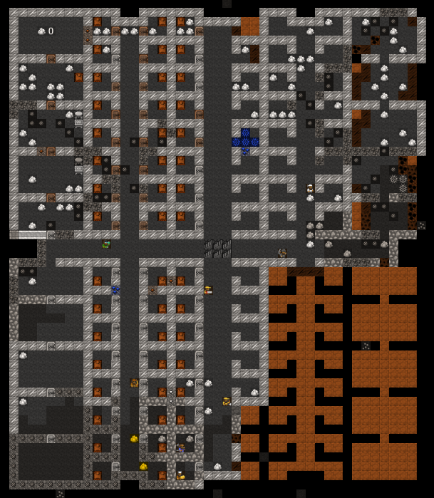
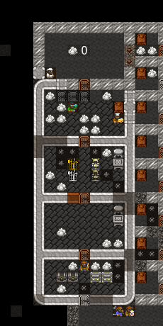

7. Nobles and other useless sods¶
You’ve come a long way, padawan, but don’t worry, I won’t let any stupid angsty teenager come and strike you down because he’s in a tizzy having lost his mum! No, nothing of the sort! Baby Dwarf Fortress managers like yourself will prosper and grow strong like a seedling, going on to bear nice dwarven fruit. And not the Class-C sort of fruit that gets picked and sold on the streets, no, nice, rare, delicious fruit! Anyway, where was I? Oh, yes, chapter 7, Nobles and other layabouts. Get on with it!
7.1. Interior decorating¶
Decorating your massive housing project should be complete now. Here’s how mine looks. Every room has a bed and a door and the noble rooms (they will need four rooms each, as a rule) are kitted out with assorted stuff to keep any nobles who visit happy. Lets cover off the details.
Nobles (from the n menu) generally want a bedroom (assigned from a
bed), a dining room (assigned from a table), an office (assigned from a
chair) and often a tomb as well (assigned from a coffin). For
simplicty’s sake, set up each room in its own contained area and then
throw in some decorations to keep the noble happy, like armor stands,
weapon stands, containers, statues, cabinets, cages (with their
favourite animal in them), that sort of thing. Usually nobles want at
least two of most of those items so produce a ton and get placing!
What is all this about nobles I hear you ask? Well, once your fortress gets to a certain size, those purple slacker dwarves will come to live in your fortress. They usually don’t do much (other than haul stuff) but they do make demands. Their biggest demand is for rooms, which need to be of a certain quality. Quality can be increased through smoothing and engraving the walls of the room as well as adding more furniture, especially high quality furniture.
The other thing nobles do is make mandates. Mandates are demands by the noble for things to be done, like the production of certain goods, or a ban on the export of certain goods. It pays to try and meet the demands of your nobles or they may go crazy and cause all kinds of problems.
Lets have a look at nobles. Go ahead and hit n. This is your noble
list, right now it should be fairly short, but in time it will grow.
Chances are it looks like this:
In most new fortresses only one dwarf is set as expedition leader. As the fortress grows more noble ranks will appear in this list and more positions will be filled. However we’ve been ‘lucky’ - one of our dwarves has become king, presumably because all the other candidates died. This is kinda cool, but a king can also be unreasonably demanding.
Lets look at the king. Hit Enter and you’ll see info about the
state of his stuff. Our king owns 14 objects, mostly clothes,
and has meagre quarters. Rooms and item he ‘needs’ are
in red, and things he has (but aren’t good enough) are in yellow.
Start building a sweet suite, and we’ll come back to him later.
Next job for you is to assign a book keeper. Usually, if you embark with at least one dwarf with the appraiser skill (good idea, by the way), this job would already be filled. But for now it’s vacant. This skill is what makes our stock count accurate (more on that later). Fortunately for us we can chose a dwarf to do the job. They might not be doing a good job at first (having no skill), but they will learn, and they provide a useful function, accurate stocktaking!
So, in the nobles screen use the arrow keys to scroll down to
Bookkeeper and hit Enter. Find Eshtan and hit Enter,
assigning him to this job. The bookkeeper requires an office to work,
just as well we just assigned him one, right?
Next, with Bookkeeper still highlighted hit s for settings
(the only noble role you can assign settings for). The screen you’ll see now
dictates how much time your dwarf will spend counting. Use the arrow to
scroll to Highest and hit enter. Eshtan will now work very hard to
get all our stock counts accurate!
Finally, let’s assign a room to our bookeeper - he’s not demanding any,
but it’ll be useful to know how when the royal rooms are finished.
q to see the room, a to assign, select the dwarf in question,
and finally Enter to set. Now go back to the noble list and you’ll
now see his holdings have changed!
There you go, a quick overview of nobles. As you play the game more you will have to deal with nobles a lot, but don’t worry, the Dwarf Fortress Wiki should provide you with heaps of tips and advice should you get confused.
7.2. Accounting is fun! Really!¶
We’ve mentioned stocks, but not discussed the stock screen yet, so lets
get to it now. Hit z and you’ll see this screen:
Lets go over what you’re seeing here:
- Across the top are sub menu options. You can scroll through them
using the arrow keys (
←and→) and then hitEnterto learn more. - There’s a description of your wealth on the left. We can get more accurate details with a skilled bookeeper.
- There are food store stats, but those question marks indicate we really aren’t that sure how much food or drink we’ve got. The bookkeeper should turn these figures accurate fairly soon.
- Then we have population information. Not too interesting I find.
With Animals selected, hit enter. You can see all the animals in your fortress on the following screen. This is also the screen you can set animals to be butchered en mass. If you set a few to be butchered a dwarf with small animal dissection and butchery skills enabled will run off and start grabbing those animals and chopping them up in the Butchery. You won’t need to set anything at that workshop, the butcher tasks gets added automatically.
Butchering animals is a great way to get a lot of food, bones and skin (for tanning into leather) but be careful! If you assign a big list of animals to be slaughtered by the time the butcher gets to the last one the animals may have become someone’s pet. This results in the butcher walking up to the animal, as it follows its master around, dragging it off and turning it into steak. This is somewhat disturbing to the dwarf whose pet you’ve just killed! So, don’t tag too many animals at once. Also, make sure you leave at least one breeding pair (male and female symbols to the right of the pet’s name), or you won’t get any more baby animals popping out, will you?
Now go back to the stocks menu and hit Kitchen. This is where you see a list of what your dwarves will consider using to cook meals in the kitchen when ordered (dwarves like cooked meals). Remembering that cooking destroys plant seeds, here are some guidelines for you:
- Cooking meat (ie, cook is blue) is fine.
- Don’t cook spawn or seeds (cook is red`) unless you have way, way too many.
- All plants can be brewed as brewing returns seeds.
- Turn off cook for Plump Helmet, you don’t want to cook them out of stock, right?
- Cooking booze is great as you end up magically creating more food than you started with. Trust me on this (or look it up on the wiki).
Good work! Now back out of that menu and chose stone. In the stone menu you see (in red) all the stones your dwarves are forbidden to build with/use and in green, all the ones they are allowed to use. Scroll through with the arrows and hit enter over every stone that does not have a use description appear on the right.
The reason you are doing this is so that the dwarves have much more choice in the stone they will use to make doors, walls, etc etc. This stops them running half way across the map to get some boring stone when a perfectly useful stone (that just happens to be yellow) is sitting next to them, but ignored.
Backing out to z the final menu is stocks. This is a master
list of all items in your fortress and is a good way to see exactly how much of
certain items you’ve got . Until your bookkeeper gets working you won’t
get any detail, but trust me, you’ll see heaps, in time.
You can use this menu to manage the items in your fortress more easily.
For example, you might find, after a goblin raid, that you’ve got a ton
of their crappy weapons lying around, what to do with them? Well, you
could add them to weapons traps, or you could find them in the stocks
menu and hit m for Melt when they are selected and
then any smelter with the Melt metal object task on will
have a dwarf grab the item and then melt it back to a metal bar.
You can also use this menu to forbid items. If you have a bunch of
low-quality junk you don’t want your dwarves to use, hit f for
Forbid with the item highlighted and they will ignore it.
This is handy when setting weapons and armor up for your military as
you can prevent them from picking up wooden swords and thus push them
to pick up your non-forbidden steel swords!
The last menu Justice doesn’t come in to play until we have more nobles who will start wanting to throw dwarves into jail if they ignore their mandates. Worry about that latter!
7.3. A bedroom fit for a King!¶
Remember that sweet suite the king wanted? If you didn’t decide it was a royal pain, here’s an example of what you might build:
- Four large rooms, smoothed and engraved on the walls and floor
- Plenty of valuable furniture
- One bedroom, one office, one private dining room, and one tomb

He’s still not happy of course, but it’s something. At this point you can continue piling on the valuables, or arrange an… unfortunate accident.
7.4. Homework time!¶
You’ve got a tricky job to do now, ok, not so tricky really. I want you to dig exploratory tunnels in every direction from your living room and the below levels. Try and cover most of the map with your grid of tunnels. We’re looking for three things: metal ore, gems, and magma. You may want to assign another dwarf or two to mining duty, and to make a few more picks as well (at the metalsmith’s forge, under weapons).
We’ll see what this map is like when we return next chapter!